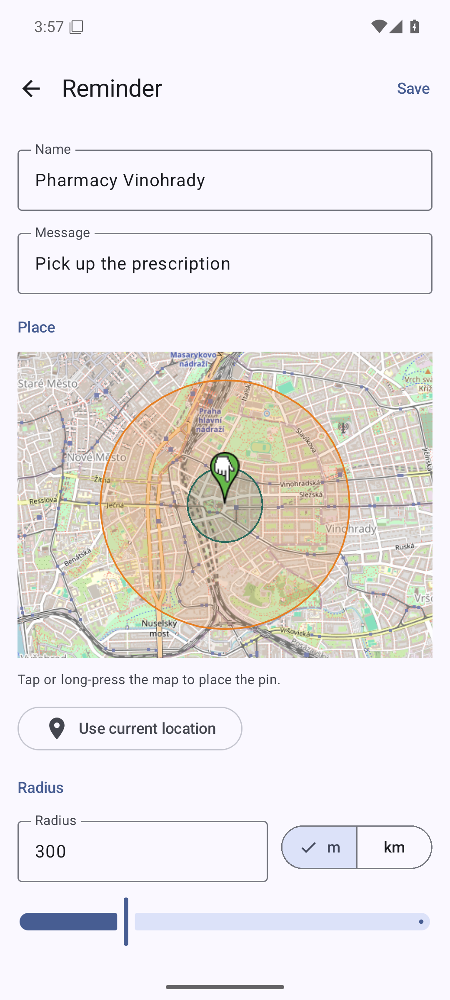

What it does
Built around places
Three triggers
Fire on arrival, on departure, or after you stay a set number of minutes.
One-time or recurring
One-time reminders switch themselves off after firing. Recurring ones fire on every match.
Heads-up before arrival
Get an early warning at a larger distance, for example 10 km out while driving.
Three notification levels
Silent, Normal, or Alarm. Alarm takes over the lock screen and rings until you dismiss it.
Easy on the battery
Uses the system geofencing service instead of tracking you in the background.
OpenStreetMap
Pick a spot on a free map. No API key and no account.
Private by design
No tracking. Your places and reminders never leave the phone.
Screens
See it



Install
Four steps
- Download the APK on your phone.
Use the button at the top of this page.
- Allow "Install unknown apps".
Android asks once for the browser or file app you used to download it.
- Open the APK and install.
Tap Install, then Open.
- Grant permissions.
Location set to "Allow all the time", notifications, and full-screen alerts. The app walks you through each one.
FAQ
Good to know
Why "Allow all the time" for location?
Reminders must fire while the app is closed and the phone is in your pocket. Android only allows that with background location. The app does not collect or send your location anywhere.
How much battery does it use?
Very little. The system geofencing service watches your places and wakes the app only when a boundary is crossed.
Why can an alert be a minute late?
To save battery, Android checks geofences about once a minute. Alerts can arrive up to about a minute after you cross the line.
Why is a radius under 100 m unreliable?
Phone location is not that precise, especially indoors. Below 100 m the phone may miss the boundary or trigger late. Use 100 m or more for dependable alerts.
What does it require?
Android 10 or newer with Google Play Services, which provides the geofencing service. Phones without Play Services are not supported.